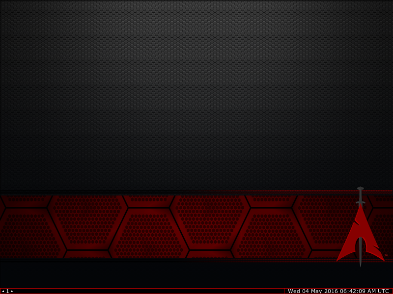

安装BlackArch Linux
BlackArch Linux是一款基于Arch Linux的发行版，主要面向渗透测试人员和安全研究者群体。2016.04.28，BlackArch Linux新版本发布，此版本为白帽子和安全研究人员提供了大约1400款渗透测试工具。
下载BlackArch Linux ISO镜像
下载它的64位ISO镜像：http://www.mirrorservice.org/sites/blackarch.org/blackarch/iso/blackarchlinux-live-2016.04.28-x86_64.iso；幸亏有天朝镜像：
$ curl -O https://mirrors.ustc.edu.cn/blackarch/iso/blackarchlinux-live-2016.04.28-x86_64.iso制作启动U盘：
从U盘启动，开始安装

BlackArch Linux的默认登录用户root，密码blackarch。
登录BlackArch，进入桌面环境（桌面环境非常简洁）：

连接网络，右键选择Network>wicd-gtk：

连接之后，打开终端；运行安装脚本，按照提示一步一步安装：
# blackarch-install
Written on May 3, 2016